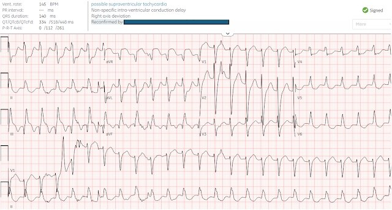
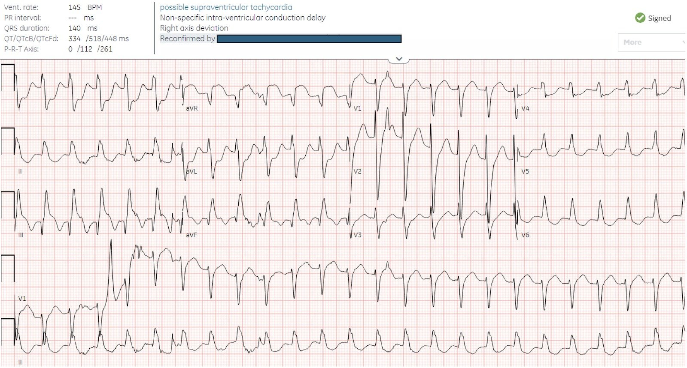
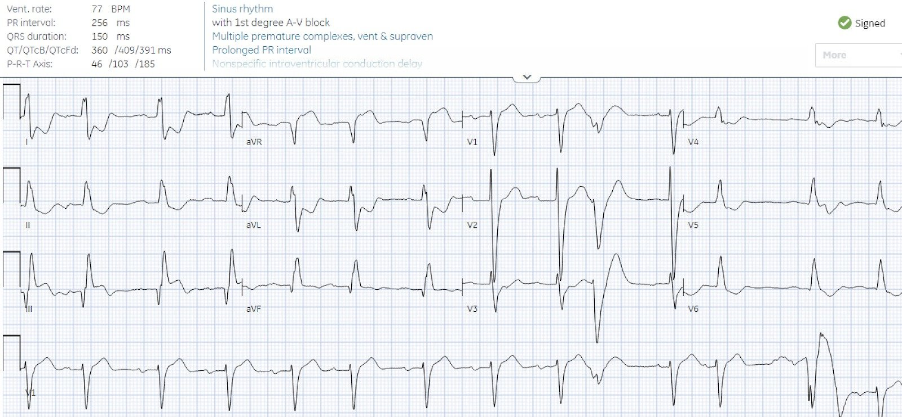
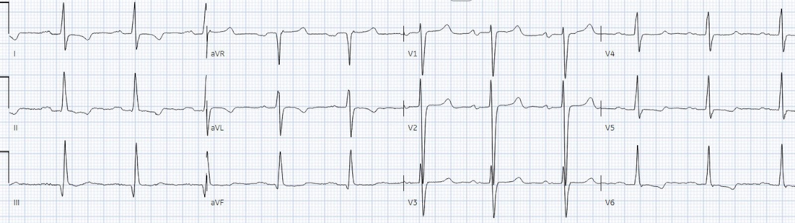
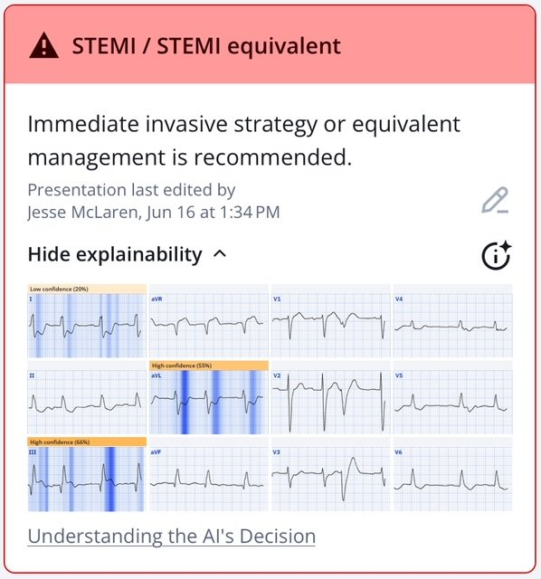
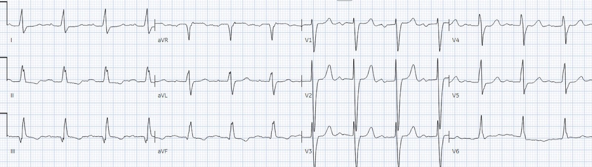
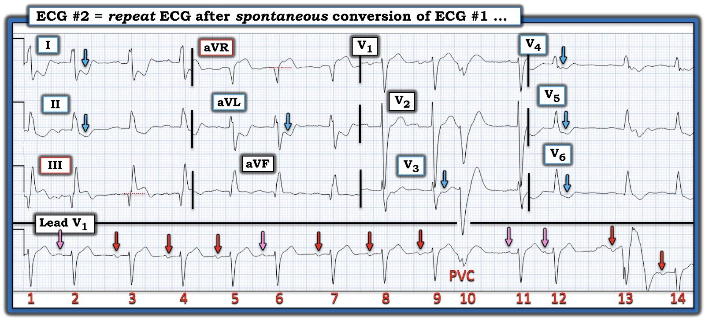

29/06/2025 — Bệnh nhân 65 tuổi đau ngực trong lúc lọc máu
Bản dịch tiếng Việt của bài "65 year old with chest pain during dialysis" – Dr. Smith’s ECG Blog. Giữ nguyên toàn bộ 7 hình ảnh của bản gốc.


Tác giả: Jesse McLaren, có chỉnh sửa của Smith
Một bệnh nhân 65 tuổi có tiền sử phẫu thuật bắc cầu chủ vành (CABG) và bệnh thận giai đoạn cuối (ESRD) đột ngột đau ngực và vã mồ hôi trong lúc lọc máu định kỳ, được cho ba nhát xịt nitroglycerin rồi chuyển tới khoa cấp cứu. Khi đến nơi, tần số tim 145 và huyết áp 75/50. Bạn nghĩ gì?


Có nhịp nhanh QRS rộng (WCT) đều (nên không phải AF) và không có sóng P
đi trước (nên không phải nhịp nhanh xoang). Có hình dạng LBBB ở các chuyển đạo trước tim,
nhưng ở các chuyển đạo chi lại có phức bộ rS ở I/aVL thay vì sóng R đơn pha –
nên đây là chậm dẫn truyền trong thất không đặc hiệu (IVCD). Không có
đặc điểm rõ ràng nào của tăng kali máu (ví dụ QRS rất rộng, sóng T nhọn). Thay vào đó, có
khử cực vách nhanh ở V1-3 (rS hẹp), gợi ý nguồn gốc
trên thất. Với khử cực bất thường thì có những bất thường tái cực ngược hướng như dự đoán, và chúng bị khuếch đại bởi rối loạn nhịp nhanh – tạo ra ST chênh xuống lan tỏa kèm ST chênh lên (STE) soi gương ở aVR. Nhưng có ST chênh lên đồng hướng ngoài dự đoán ở III, có thể là dưới thượng tâm mạc (tức là tương tự OMI) thứ phát do rối loạn nhịp nhanh hoặc do hội chứng vành cấp (ACS) nguyên phát. Điều cốt lõi: rối loạn nhịp nhanh không phải xoang, không ổn định: sốc điện chuyển nhịp và đánh giá lại.
Bệnh nhân tự chuyển nhịp và huyết áp tâm thu tăng lên mức 90, nhưng
vẫn còn đau ngực. Điện tâm đồ ghi lại:


Bạn nghĩ gì?
Nhịp xoang kèm PVC, blốc AV độ 1, và hình dạng QRS giống hệt như trong lúc
rối loạn nhịp nhanh – xác nhận đó là nhịp trên thất. Kết quả đọc mù cuối cùng là
IVCD không đặc hiệu, ngụ ý rằng mọi thay đổi ST/T đều thứ phát do khử cực
bất thường. Nhưng vẫn còn ST chênh lên đồng hướng không tương xứng ở
III và ST chênh xuống soi gương ở I/aVL, cũng như ST chênh xuống đồng hướng nhẹ
ở V2 – cho thấy có thay đổi thiếu máu cục bộ nguyên phát chồng lên, do OMI thành dưới +/- thành sau.
Nhồi máu cũ có thể gây sóng Q kèm ST chênh lên tồn dư (hình thái phình thất trái), mà ở các chuyển đạo dưới thì có thể khó phân biệt với OMI cấp. Nhưng trong trường hợp đó, sóng Q nổi bật HƠN NHIỀU và luôn nổi bật hơn sóng R. Hơn nữa, đây là thay đổi mới so với một điện tâm đồ cũ:


Điện tâm đồ cũ cũng có QRS hẹp hơn, nên phòng thông tim (cath lab) đã được kích hoạt vì cả “LBBB mới” lẫn ST chênh lên đồng hướng ở thành dưới. Nhưng đây không phải LBBB thực sự, và “LBBB mới” không còn là chỉ định kích hoạt phòng thông tim nữa. Tuy vậy, dù không phải LBBB thực sự, nguyên lý đồng hướng không tương xứng vẫn hữu ích trong việc nhận diện OMI.
Ngay cả khi không có điện tâm đồ trước đó để so sánh, điện tâm đồ này ở một bệnh nhân có xác suất tiền nghiệm ACS cao đã đủ chẩn đoán OMI. Đây là kết quả đọc của Queen, làm nổi bật ST chênh lên đồng hướng và ST chênh xuống (STD) soi gương:


Ứng dụng PMcardio for Individuals 3.0 mới nay đã có mô hình Queen of Hearts mới nhất và khả năng giải thích của AI (bản đồ nhiệt màu xanh)! Tải ngay cho iOS hoặc Android. https://www.powerfulmedical.com/pmcardio-individuals/ (BS. Smith và BS. Meyers đã huấn luyện mô hình AI này và là cổ đông của Powerful Medical.)
Còn troponin ban đầu thì sao?
Troponin thường tăng mạn tính ở bệnh nhân lọc máu, và có thể tăng do thiếu máu cục bộ do tăng nhu cầu trong rối loạn nhịp nhanh hoặc các tình trạng sốc khác. Troponin ban đầu là một chỉ dấu không đáng tin cậy của OMI cấp (nó có thể bình thường ở giai đoạn cấp, và ngay cả khi tăng thì nó cũng chậm hơn rất xa so với tổn thương cơ tim), và không cung cấp thông tin theo thời gian thực để phân biệt nhồi máu cơ tim do tắc (Occlusion MI) với nhồi máu cơ tim không do tắc (Non-Occlusion MI). Vì vậy ở bệnh nhân này, troponin ban đầu sẽ không giúp phân biệt giữa tổn thương cơ tim mạn tính, nhồi máu cơ tim típ 2 do thiếu máu cục bộ do tăng nhu cầu trong rối loạn nhịp nhanh, và nhồi máu cơ tim típ 1 do OMI hoặc NOMI vì nứt vỡ mảng xơ vữa (ACS) – và nếu là OMI, việc chờ troponin sẽ phải trả giá bằng cơ tim.
Như vậy đây là một chẩn đoán lâm sàng, được hỗ trợ bởi điện tâm đồ.
May mắn là bệnh nhân được đưa ngay vào phòng thông tim mà không chờ troponin,
với thời gian từ cửa đến phòng thông tim chỉ 45 phút. Có tắc 95% động mạch mũ trái (LCx) và đã được đặt stent. Troponin I đầu tiên là 80 ng/L (chỉ cao hơn một chút so với mức nền của bệnh nhân là 50ng/L), sau đó tăng lên 500, rồi 2.000 và đạt đỉnh 8.000 ng/L. Điện tâm đồ theo dõi
cho thấy các thay đổi ST do thiếu máu cục bộ nguyên phát đã hết, và sóng T đảo ngược tái tưới máu kín đáo ở thành dưới-sau so với điện tâm đồ nền:


Điều cần nhớ
1. Nếu bệnh nhân không ổn định do WCT và chẩn đoán phân biệt đã thu hẹp còn VT so với
SVT kèm dẫn truyền lệch hướng (ví dụ không phải AF, nhịp nhanh xoang, hay tăng kali máu/ngộ độc thuốc chẹn kênh natri), thì điều trị là sốc điện chuyển nhịp ngay lập tức, bất kể là loại nào
2. Rối loạn nhịp nhanh có thể gây thay đổi ST/T thứ phát do mất cân bằng cung-cầu, và có thể đánh giá lại sau sốc điện chuyển nhịp. Khi troponin tăng, đây là một trong các nguyên nhân của “nhồi máu cơ tim típ 2”
3. ‘LBBB mới’ không phải là chỉ định kích hoạt phòng thông tim
4. ST chênh lên đồng hướng không tương xứng có thể nhận diện OMI ở cả LBBB lẫn IVCD
5. Troponin đầu tiên là chỉ dấu không đáng tin cậy của OMI trong đau ngực cấp và không thể phân biệt tổn thương cơ tim mạn tính và thiếu máu cục bộ do tăng nhu cầu với nhồi máu cơ tim típ 1 (ACS, nứt vỡ mảng xơ vữa) OMI hay NOMI: OMI là một chẩn đoán lâm sàng, được hỗ trợ bởi điện tâm đồ (và AI)

===================================
BÌNH LUẬN CỦA TÔI, bởi KEN GRAUER, MD (29/6/2025):
===================================
Một ca bệnh sâu sắc của BS. McLaren — với nhiều ĐIỂM THEN CHỐT (PEARL) trong đánh giá và xử trí. Tôi tập trung bình luận vào một vài khía cạnh thú vị bổ sung liên quan đến điện tâm đồ ghi lại, được ghi sau khi nhịp nhanh QRS rộng đều (Wide-Complex Tachycardia) trên điện tâm đồ thứ 1 của ca hôm nay tự chuyển nhịp.
- Để rõ ràng, trong Hình 1 — tôi đã vẽ lại và đánh dấu điện tâm đồ ghi lại này.
Phát hiện nhịp bằng các chuyển đạo ghi đồng thời:
Như BS. McLaren đã nêu — việc giữ nguyên hình dạng QRS giống như trong lúc WCT trên điện tâm đồ thứ 1 của ca hôm nay đã xác nhận rằng WCT này là nhịp trên thất, với hình dạng IVCD (IntraVentricular Conduction Defect) bất thường . Tôi chọn vẽ lại bản ghi này — vì nó là một ví dụ tuyệt vời về cách dùng các chuyển đạo ghi đồng thời một cách tiết kiệm thời gian để suy ra nguồn gốc của từng nhát bóp trong Hình 1:
- CẢNH BÁO: Như BS. McClaren đã nêu — manh mối MẤU CHỐT gợi ý rằng WCT trên điện tâm đồ thứ 1 của ca hôm nay là nhịp trên thất, là khử cực vách nhanh (tức là sóng R khởi đầu hẹp ở các chuyển đạo V1 đến V3). Dù vậy — tôi xin thêm lưu ý rằng manh mối này hữu ích bao nhiêu thì nó cũng không phải là tuyệt đối — vì đôi khi tôi đã thấy những trường hợp VT được ghi nhận chắc chắn lại biểu hiện các sóng khởi đầu của QRS hẹp đến bất ngờ ở các chuyển đạo trước này. Lý do tôi chưa tự tin ở ca hôm nay về nguồn gốc trên thất của WCT cho tới khi thấy điện tâm đồ #2 — là vì sóng khởi đầu của QRS trong nhịp WCT lại rộng ở nhiều chuyển đạo khác.
- Nhưng sự hiện diện của sóng P xoang với khoảng PR không đổi (dù kéo dài) trên dải nhịp dài chuyển đạo V1 (các mũi tên ĐỎ) — đã xác nhận nguồn gốc trên thất trong Hình 1.
- Dù hoàn toàn thừa nhận rằng các chi tiết bổ sung về nhịp trong Hình 1 không làm thay đổi xử trí — việc khéo léo sử dụng dải nhịp dài chuyển đạo V1 kết hợp với các chuyển đạo ghi đồng thời từ bản ghi 12 chuyển đạo phía trên nó, cho phép làm rõ rằng các sóng P có mũi tên HỒNG trong Hình 1 là PAC — vì: i) Các nhát #2,6 và 12 đều đến sớm hơn dự kiến; ii) Khoảng PR của 3 nhát này luôn ngắn hơn khoảng PR của các sóng P có mũi tên ĐỎ; và, iii) Hình dạng của 4 sóng P có mũi tên HỒNG trong Hình 1 khác một cách kín đáo so với hình dạng của các sóng P xoang có mũi tên ĐỎ (các sóng P có mũi tên HỒNG này đều thiếu phần âm cuối của sóng P mà các sóng P xoang có).
- Ngược lại — nhát #10 là một PVC, dù phức bộ QRS của nhát này nhỏ trên dải nhịp dài chuyển đạo V1. Chúng ta biết điều này — vì nhát #10 ghi đồng thời ở các chuyển đạo V1,V2,V3 rõ ràng rất rộng và có hình dạng rất khác so với các nhát #8,9 và 11 ở những chuyển đạo này.
- Tuy nhiên — nhát #13 trên dải nhịp dài chuyển đạo V1 không phải là PVC. Chúng ta biết điều này dù nhát này rộng và trông khác biệt đến thế nào ở chuyển đạo V1 — vì hình dạng QRS của nhát #13 — tức nhát #13 ghi đồng thời ở các chuyển đạo V4,V5,V6 — giống hệt hình dạng QRS của các nhát #12 và 14 ở những chuyển đạo này. Rõ ràng lý do khiến QRS của nhát #13 trên chuyển đạo V1 dài có hình dạng kỳ dị là do nhiễu.
- “Điều cần nhớ” — Theo kinh nghiệm của tôi, khái niệm đánh giá hình dạng sóng P và QRS bằng các chuyển đạo ghi đồng thời vẫn chưa được tận dụng đúng mức. Dù không quan trọng về mặt lâm sàng ở điện tâm đồ #2 — vẫn có những lúc kỹ thuật này sẽ là yếu tố quyết định duy nhất để phân biệt SVT với VT.


Hình ảnh Aslanger?
Dù hoàn toàn thừa nhận vai trò gây nhiễu của hình dạng IVCD bất thường mà chúng ta thấy trong Hình 1 — tôi ngay lập tức đi tới cùng nhận định như BS. McLaren rằng điện tâm đồ #2 chỉ điểm nhồi máu thành dưới cấp — vì bản ghi này giống với hình ảnh Aslanger.
- Như BS. Meyers đã bàn luận và trong phần Bình luận của tôi ở bài đăng ngày 31 tháng Mười Hai năm 2024 trên Dr.Smith’s ECG Blog — sự kết hợp giữa ST chênh lên ở chuyển đạo III (nhưng không ở các chuyển đạo dưới khác) — cùng với một hình ảnh điện tâm đồ ngoài ra phù hợp với DSI (thiếu máu cục bộ dưới nội tâm mạc lan tỏa — Diffuse Subendocardial Ischemia) — gợi ý có OMI thành dưới cộng thêm bệnh nhiều nhánh mạch vành nền.
- Chẩn đoán DSI ở ca hôm nay được gợi ý bởi ST chênh xuống ở nhiều chuyển đạo (như 7 mũi tên XANH trong Hình 1) — kết hợp với ST chênh lên rõ ở chuyển đạo aVR.
- Mặc dù chúng ta chỉ được cung cấp thông tin từ báo cáo thông tim về động mạch LCx “thủ phạm” — hình dạng IVCD kỳ dị, kết hợp với các phức bộ QRS phân mảnh ở nhiều chuyển đạo gần như chắc chắn chỉ ra có thêm “sẹo” nền do bệnh mạch vành.